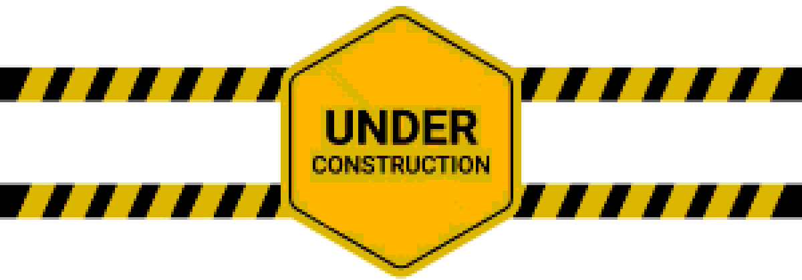

Out of all my hobbies, music is probably the one I'm most immersed in. I've got a pretty humble record collection
and I'm constantly pushing myself to listen to new things and stuff outside of my comfort zone. I've reached a point where I honestly
can say with confidence that there's not really any genres I dislike which is something I think is pretty cool.
I love music and think all of it deserves to be enjoyed, or at least appreciated for what it is. Side tangent but
but i think the whole new wave of gatekeeping music and constantly trying to find less and less popular artists purely
for the sake of saying you're not a mainstreamer is lame as hell. I can guarantee no one gives a shit what Jerk or Shoegaze artist you're listening to man.
And also it's just so backhanded, yeah dude keep this artist underground so they keep making music out of a shoebox.
Alright side tangent done. As for the actual music I like, while I enjoy a lot of different stuff,
I tend to gravitate to music with complex and "chaotic" productions, regardless of genre. I love music with crazy walls of sound,
they just scratch my brain and it makes relistens so worth it since I'm always finding new details.
Another thing to know about the way I consume music is that I don’t think every song on an album has
to be a no skip banger for the album to be considered a masterpiece by someone as long as it contributes
something to the project’s themes, personality, sound, etc. On that note, I also try to avoid giving
number ratings when talking about music for a similar reason, I feel like the number ranking system
doesn’t work and it’s much better to discuss the content of an album without trying to compress all
of those thoughts into a 1-10 number ranking, fitting so many complex thoughts and feelings about an
album into one number is hard lol.
Down below I have reviews on the albums that I would consider to be my all time favorites, albums that
I adore with all my heart and constantly listen to. If you’re interested in reading them, just click on
the album and it will take you to the review. One thing I want to note is that the albums I have on here
are MY personal favorites and not albums I’d consider to be “objectively the best.”
Only 3 reviews are up so far, but I'll have the rest updated soon!
